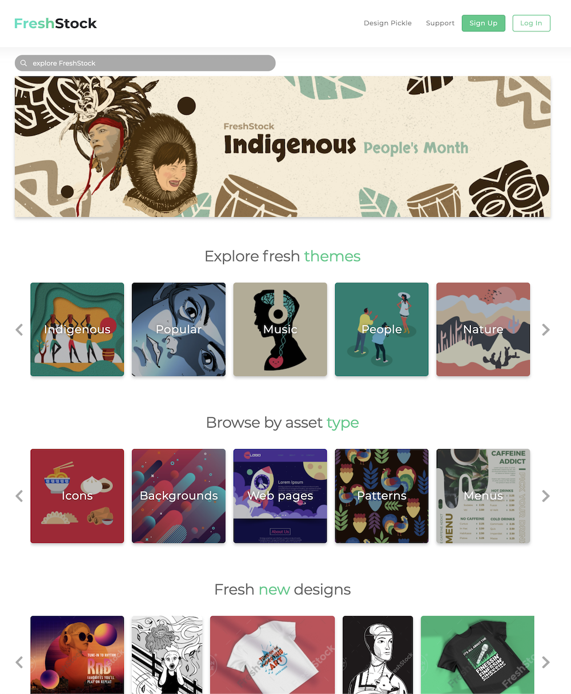
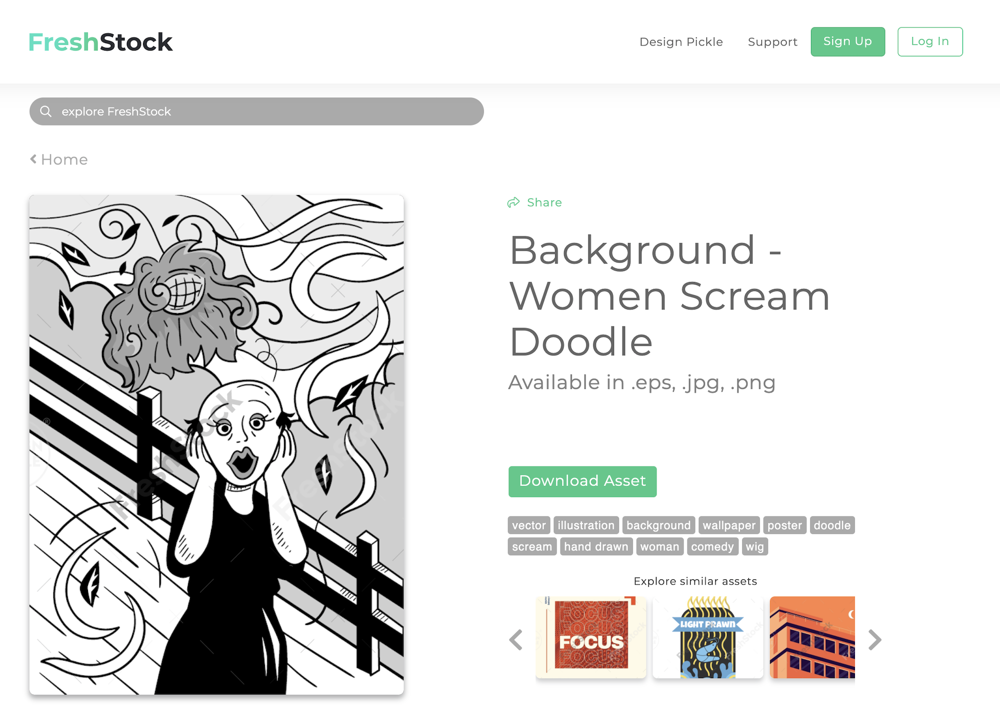

Senior Ruby on Rails Engineer
Grand Rapids, MI
FreshStock started as an idea in the middle of 2019. By the end of 2019, our team of ~20 illustrators had built a library of almost 10,000 unique illustrations for a stock illustration library. It was then, in November 2019, that I was asked to serve as Product Manager and oversee the architecture and development of a brand new app to showcase the illustrations. At this point, the Product Team consisted of 1 UI/UX designer and 3 engineers (including me).
I chose to build an MVP, because the idea was still unproven and may not be viable. Also, there were many other Design Pickle priorities in addition to this project, we had a very small team, and we wanted to validate the product as quickly as possible.
The minimum requirements were:
In order to accomplish this in a short time frame, I chose to build the service into the existing Design Pickle app. This allowed for the sharing of registration, login, and subscription functionality (with some small tweaks) as well as seamless integration between FreshStock and Design Pickle (both on the admin side and customer facing).
For asset management, I chose to go with Filestack, which allowed easy background uploading, storage, and delivery through AWS S3 with minimal work.
One of the big unforeseen problems that we encountered was quality assurance of assets. Some of the stock illustrations were unintentionally inappropriate or improperly named, and there had been no systematic naming convention or labeling / categorization strategy. Therefore, even with ElasticSearch powering our search, it was difficult to find what you were looking for. Also, some asset bundles had multiple file formats / color options / font files, while others didn't. There was very little consistency from one bundle to the next. The Product Team got together and came up with some basic requirements for how to name and organize assets to at least help standardize the library to some extent.
By March 2020, (approximately 3 1/2 months after beginning work), FreshStock launched.


Overall, I believe the project was a resounding success. The site was completed ahead of schedule, was fully functional, launched with more than 15,000 published asset bundles (each bundle included multiple files), and was ready to be tested for viability.
In the end, Design Pickle decided to go a different way with FreshStock, absorbing it into the main Design Pickle site as a way to add more value for customers rather than functioning as a stand-alone product, which further validated that running with an MVP was the best choice in this circumstance.